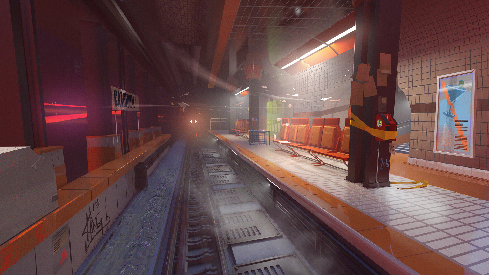
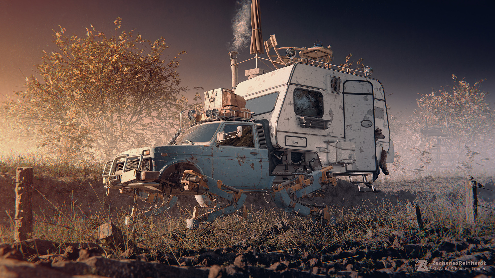
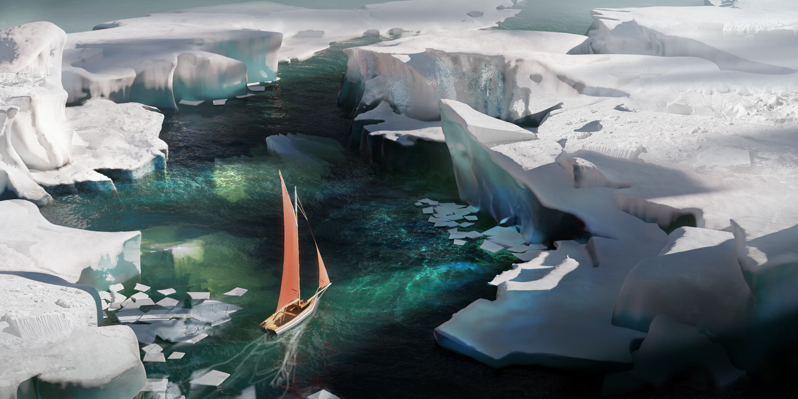
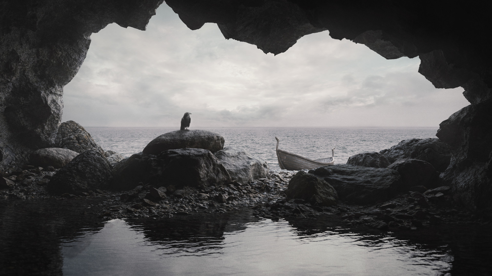
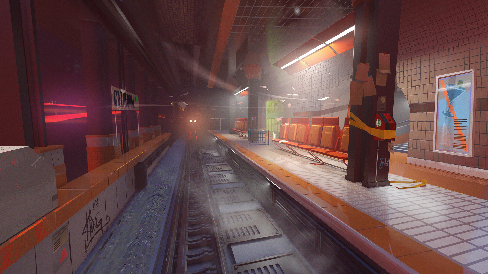
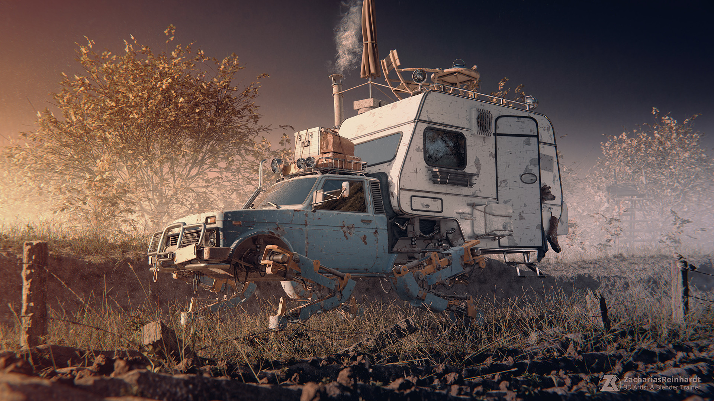
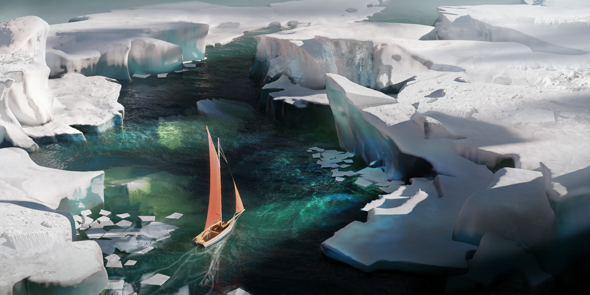
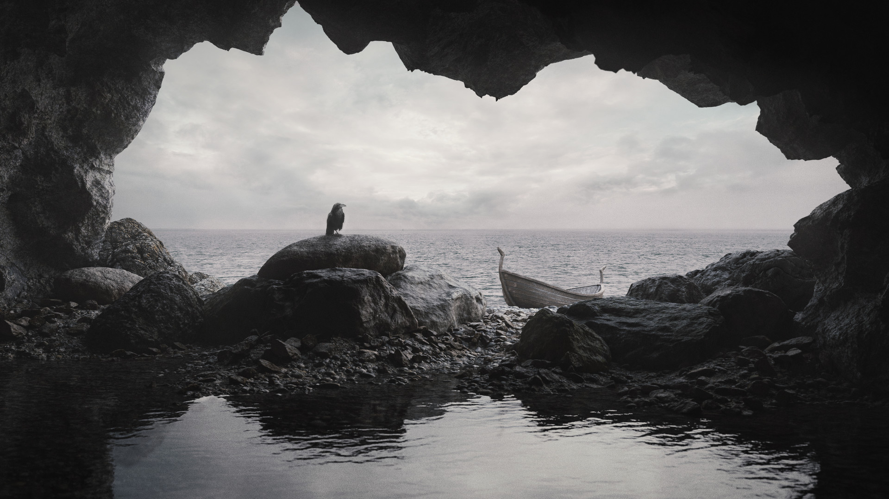

Blender Projects
Below are some examples of projects people have done with Blender! (Works by: Zreinhardt, Ned Rogers, Mason Menzies, and William Bang.)
   Below are some examples of projects people have done with Blender! (Works by: Zreinhardt, Ned Rogers, Mason Menzies, and William Bang.)
   